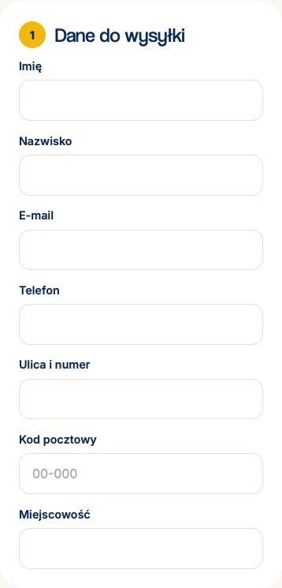

Fonty i wyświetlanie sklepu na telefonach
Najważniejsze poprawki wdrożono w lokalnym prototypie. Zweryfikowano 23 podstrony sklepu, 15 szerokości i trzy silniki przeglądarek. W 1035 kombinacjach nie wykryto poziomego przewijania dokumentu, wystawania kontrolowanych elementów poza ekran ani błędów JavaScript.
gay0uyj jest dodany do wszystkich 23 podstron i styleguide. Po publikacji zestawu Polish potwierdzono poprawne ładowanie i pełny zestaw ąćęłńóśźż ĄĆĘŁŃÓŚŹŻ w wagach 400, 700 i 900 w Chromium, Firefox i WebKit. Kontrola rzeczywiście użytych fontów w Chromium potwierdziła, że wszystkie 18 polskich liter pochodzi z Coolvetiki, bez zastępowania przez Inter. Dodatkowy font nie jest potrzebny.Ustalenia i wdrożone poprawki
| Priorytet | Problem | Wdrożenie |
|---|---|---|
| Wysoki | Coolvetica miała wyłącznie źródła local(). Bez zainstalowanego fontu nagłówki używały różnych fontów systemowych. Inter zależał od Google Fonts. | Lokalny Inter 4.1 WOFF2: wagi 100–900, kursywa, polskie znaki, font-display: swap, preload normalnego kroju. Usunięto zależność od Google i fontów zainstalowanych u odbiorcy. Dołączono licencję OFL i źródła plików. Następnie podłączono Coolvetikę z projektu Adobe gay0uyj dla nagłówków; Inter pozostaje fontem tekstów i fallbackiem. |
| Wysoki | Menu po przejściu do desktopu pozostawało otwarte i blokowało przewijanie. | Zamykanie na progu 1000 px, przywracanie pozycji strony, obsługa Escape i Tab, fokus po otwarciu/zamknięciu, nieaktywne tło i dynamiczna wysokość nagłówka. |
| Wysoki | WebKit rozszerzał nagłówki grup formularza zamówienia poza ekran po zmianie szerokości. | Zmieniono układ fieldsetów z grid na flow-root, zachowując legendy, odstępy i semantykę formularza. |
| Średni | Pola formularzy dziedziczyły 14,4 px; na telefonie tekst był mały. | Pola mają co najmniej 16 px przy standardowym rozmiarze tekstu. Nie wyłączono powiększania strony. |
| Średni | Odznaka gwarancji wychodziła o 17 px poza ekran przy 320 i 390 px. Element koszyka na 320 px przekraczał szerokość kontenera. | Odsunięto odznakę od brzegu, zarezerwowano miejsce na treść i poprawiono siatkę pozycji koszyka. Długie teksty i przyciski mogą się zawijać. Usunięto globalne maskowanie problemów przez overflow-x: hidden. |
| Średni | Pasek zakupu mógł przykrywać dół strony i komunikat dodania do koszyka; ukryte przyciski nadal trafiały do nawigacji klawiaturą. | Rezerwa na rzeczywistą wysokość paska, komunikat ponad paskiem, inert i aria-hidden dla schowanego paska. |
| Średni | Rozwinięty panel cookies nie miał ograniczenia wysokości na niskim ekranie. | Limit wysokości oparty o dostępny viewport, przewijanie zawartości, uwzględnienie bezpiecznej dolnej krawędzi. Dodano viewport-fit i bezpieczne marginesy treści. |
| Średni | Ciasne dodatki do produktu i małe cele dotykowe w stopce. | Dodatki na telefonie mają cenę w osobnym wierszu; linki stopki i przełącznik ustawień cookies mają minimum 44 px wysokości. |
Zakres weryfikacji
- Silniki: Chromium, Firefox i WebKit z Playwright 1.64.0. WebKit dodatkowo z emulacją iPhone 13.
- Szerokości: 320, 360, 390, 414, 568, 640, 768, 899, 900, 999, 1000, 1080, 1100, 1280 i 1440 px; 23 strony HTML z katalogu głównego.
- Interakcje w każdym silniku: menu, Tab/Escape i zmiana szerokości, cookies w orientacji poziomej 568 × 320, galeria, dodanie produktu, pasek zakupu, zmiana ilości w koszyku, pola faktury, wybór dostawy i walidacja zamówienia.
- Coolvetica po podłączeniu: potwierdzono załadowanie wag 400, 700 i 900 w trzech silnikach, powtórzono 1035 kontroli układu bez błędów. Po uzupełnieniu projektu Adobe o zestaw Polish powtórzono testy: wszystkie 18 polskich liter jest dostępnych w wagach 400, 700 i 900. W trzech silnikach porównano pomiary glifów przy różnych fontach awaryjnych; dodatkowo Chromium potwierdził rzeczywistą rodzinę Coolvetica dla każdego z 54 glifów (18 liter × 3 wagi).
- Fonty — wcześniejszy test fallbacku: pobranie lokalnego WOFF2 z odpowiedzią 200 oraz załadowanie Inter dla polskiego tekstu przy zablokowanych zewnętrznych adresach. Osobno sprawdzono awarię fontów i powiększenie tekstu do 200% na stronie głównej, produkcie, koszyku i zamówieniu w Chromium przy 320 px.
- Kontrola wizualna: hero, karta gwarancji, sekcja zakupu i formularz w WebKit. Sprawdzono też ujawnianie formularza przy zwykłych animacjach, bez preferencji ograniczenia ruchu.
Wyniki kontroli polskich znaków. Zapis wyników testów układu. Testy do ponownego uruchomienia: scripts/audit-layout.cjs i scripts/audit-interactions.cjs. Instrukcja w README repozytorium.
Podgląd po poprawkach

Granice audytu i dalszy krok
Testy dotyczą bieżących silników przeglądarek i emulacji. Nie zastępują kontroli na fizycznym iPhonie i Androidzie, zwłaszcza z otwartą klawiaturą ekranową i paskami przeglądarki. Nie obejmują historycznych wersji przeglądarek. Karuzele zachowują celowe przewijanie wewnętrzne. Nie jest to pełny audyt dostępności ani backendu: sklep nadal jest prototypem, bez rzeczywistych płatności i wysyłania zamówień.
Rozszerzony zestaw Polish jest aktywny pod tym samym linkiem CSS. Weryfikacja została wykonana w świeżych sesjach przeglądarek. Nagłówki używają Coolvetiki, teksty lokalnego Inter; Inter pozostaje też awaryjnym fontem nagłówków na wypadek niedostępności Adobe. Adobe obecnie ustawia font-display: auto; opcjonalna optymalizacja w konfiguracji projektu to swap. Inter używa już swap.